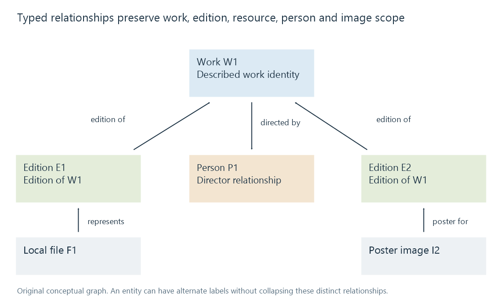

Metadata relationships
Metadata relationships connect identified entities through directed, qualified meanings such as edition, credit and artwork association rather than through shared display wording alone.
A metadata relationship connects entities with a meaning. “Directed by”, “edition of” and “poster for” are different links even when all are drawn as lines.
An original graph preserves the levels
Suppose local file F1 represents edition E1 of work W1. Another edition E2 belongs to W1, person P1 directs W1, and image I2 is a poster for E2.
| Source | Relationship | Target |
|---|---|---|
| F1 | Represents | E1 |
| E1 | Edition of | W1 |
| E2 | Edition of | W1 |
| W1 | Directed by | P1 |
| I2 | Poster for | E2 |

F1 is not the catalogue work itself. Its codec or byte checksum describes another level than W1's title and credits.
Direction determines the query
To find other editions of F1's work, follow F1 to E1, then E1 to W1, then the edition relationships back to E2.
To find other works by P1, use the director relationship in the appropriate direction. That query does not mean “other files with the same printed artist name”.
A work related through an actor edge can answer another discovery question than a work related through a director edge.
Qualifiers retain the actual responsibility
Cast and crew credits develops person, role, character and ordering. A bare person-to-work line can lose those distinctions.
Relationships can also have a source, applicable time or release context. A series credit and an episode guest credit need not make the same claim.
Stable identities help prevent two people with equal names from being merged, while alternate labels can remain attached to one known entity.
Asserted and derived links have different evidence
A provider can explicitly state that an edition belongs to a work. A local process can derive a tentative relationship from title/year similarity.
Those are different provenance histories. Similarity alone should not silently be stored as an unquestioned identity equivalence.
An Emby library can expose useful associations without implementing the exact graph shown here. The conceptual levels explain why a recording match, a movie match and a file-version match support different related-data choices.
Relatedness can drive discovery without collapsing identity
A recommendation can use shared contributors, categories or edition relationships. The resulting “related item” is still another entity, not a duplicate merely because it shares some features.
Keeping typed links makes that result explainable: another film by the director, another edition of the work, or another resource for the selected edition are three concrete relationships.